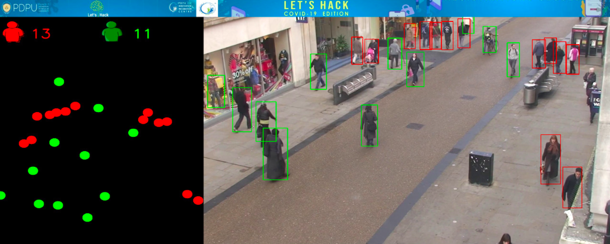
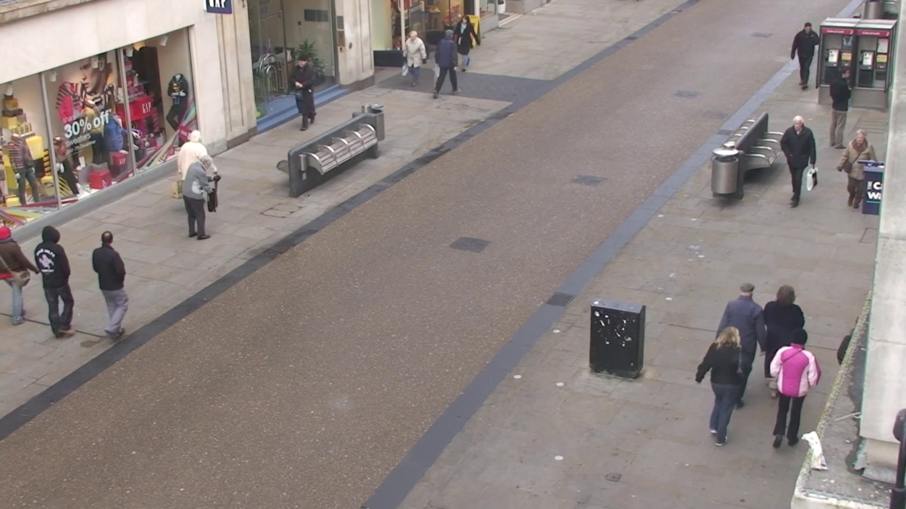
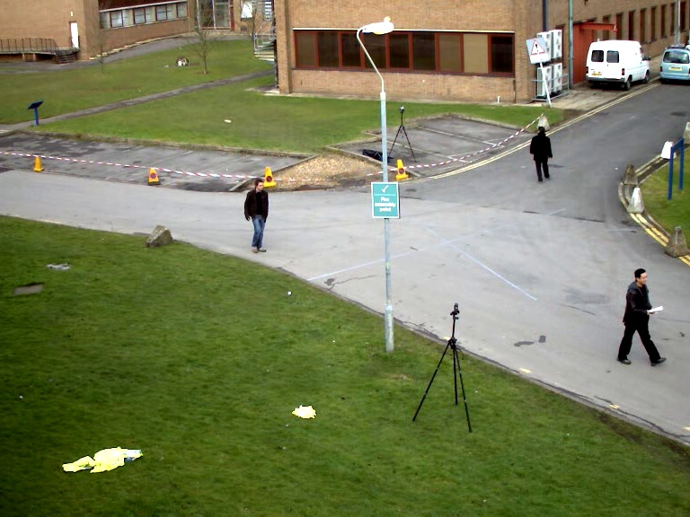

Social Distance Surveillance
 Result on PET2009 Dataset.
Result on PET2009 Dataset.
Looking for Social Distance Monitoring by CCTV integrated with AI?
-
Maintaining social distancing is a very crucial issue in a COVID-19 outbreak scenario.This is an effective way to control the spread of the virus. However it is very difficult to maintain and monitor the social distancing norms in many cases such as in public places, offices and workplaces , where working in a close proximity is a requirement
-
COVID-19 has impacted society in a drastic way. Due to this invisible enemy, it is required to keep a social distance between humans. But as human beings are social animals, it has been really difficult to maintain the required social distance in different areas. And due to this factor, logarithmic increase in the number of cases has been really huge.
Results
Result Videos
| Youtube Video 1 | Youtube Video 2 | Youtube Video 3 |
|---|---|---|
 |
 |
 |
Step-by-Step Solution
Model selection:
- People detection (Model to detect humans ex: Yolo(You only look once))
- Load and start the model
- Pass a video frame through the model to detect objects
- Filter out weak predictions and non-relevant objects (other than humans)
Birds-eye view transformation
- Select the coordinates of the points located at the bottom centre of the detected person box
- Perspective transform on selected point for top view with the help of a computer vision library
Social distancing measurement
- With the help of transformed points calculate euclidean distance and map with image pixels to the real distance between 2 people.
- If they are not maintaining social distancing then mark their respective boxes using Red colour
Results and Improvements
- Using a faster model in order to perform real-time social distancing analysis.
- Automatic calibration problems could improve a lot the birds-eye view transformation on different scenes.
Birds eye View Transformation
| original Image | Transformed Image | Birds eye View |
|---|---|---|
 |
 |
 |
 |
 |
 |
Output dashboard
| Input Image | Output Image |
|---|---|
|  |
 |
|  |
 |